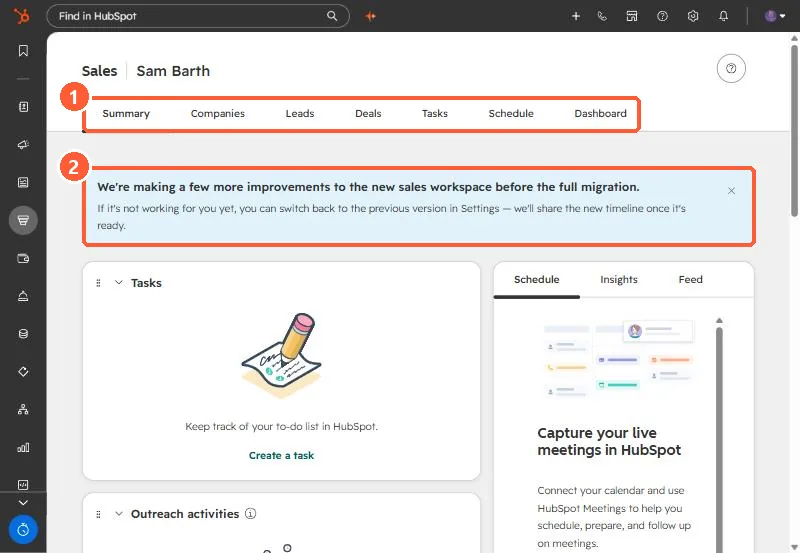

Short answer
Sales, Sales Workspace gathers a rep's work in tabs: Summary, Companies, Leads, Deals, Tasks, Schedule and Dashboard in my demo portal. Summary shows task cards you can start in a queue, sequence steps, and previews of schedule, insights and feed. Schedule is a read-only view of connected calendar events and tasks. My demo showed a banner saying more improvements are coming before a full migration, and that you can switch back to the previous version in Settings.
1. The tabs
Open Sales > Sales Workspace. My demo portal shows a migration banner above the cards.


2. Summary
- The Tasks card lets you start all assigned tasks, or one category such as high priority or calls.
- Sequence tasks get their own cards. Click a step to open its queue.
- The right side previews today's schedule, insights and feed.
3. Schedule
A read-only view of connected calendar events and all tasks, so reps can see conflicts before time off. Meeting prep and recap only work for meetings with at least one non-internal contact. Calendar connection is covered in syncing tasks to your calendar.